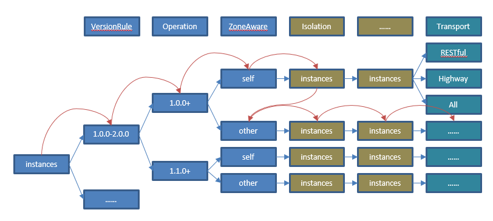

load balancing
Scene Description
ServiceComb provides very powerful load balancing capabilities. Its core consists of two parts. The first part is DiscoveryTree. DiscoveryFilter is its main component by grouping microservice instances according to interface compatibility, data center, instance status, etc. The second part is based on Ribbon's load balancing scheme, which supports random. Various load balancing routing policies IRule, such as order, response time-based weights, and ServerListFilterExt that can support the Invocation state.
DiscoveryTree's logic is more complex. You can understand its processing through the following process. 
Load balancing is applied to the Consumer processing chain. The name is loadbalance. The examples are as follows:
servicecomb:
handler:
chain:
Consumer:
default: loadbalance
POM dependence:
<dependency>
<groupId>org.apache.servicecomb</groupId>
<artifactId>handler-loadbalance</artifactId>
</dependency>
Routing and forwarding according to data center information
Service providers and consumers can declare their service center information in microservice.yaml:
servicecomb:
datacenter:
name: mydatacenter
region: my-Region
availableZone: my-Zone
Consumers compare their own data center information and provider information, preferentially forward the request to the same instance of region and availableZone; if it does not exist, it forwards to the same instance of the region; if it still does not exist, it forwards to other Example.
The region and availableZone here are general concepts, and users can determine their business meanings to apply them to resource-isolated scenarios. See [Logical isolation relationships between microservice instances] (/build-provider/definition/isolate-relationship.md) for more isolation and isolation mechanisms.
This rule is enabled by default. If it is not needed, it can be closed by servicecomb.loadbalance.filter.zoneaware.enabled. Data center information isolation is implemented in ZoneAwareDiscoveryFilter.
Routing and forwarding based on instance attributes
Microservices can specify the properties of an instance. Instance properties can be specified in microservice.yaml or modified through the API of the service center.
instance_description:
properties:
tag: mytag
Consumers can specify to consume instances with certain attributes without accessing other instances.
servicecomb:
loadbalance:
myservice:
transactionControl:
options:
tag: mytag
The above configuration means that only instances with the tag attribute mytag in all instances of myservice are accessed.
This rule needs to be configured separately for each service. Unconfigured means that the rule is not enabled and global configuration for all services is not supported.
This rule is enabled by default. If it is not needed, it can be closed by servicecomb.loadbalance.filter.instanceProperty.enabled. The route forwarding function based on the instance attribute is implemented in InstancePropertyDiscoveryFilter.
Instance isolation
Developers can configure instance-isolated parameters to temporarily mask access to the wrong instance, improving system reliability and performance. Below are its configuration items and default values
servicecomb:
loadbalance:
isolation:
enabled: true
errorThresholdPercentage: 0
enableRequestThreshold: 5
singleTestTime: 60000
continuousFailureThreshold: 2
The statistical period of isolation is 1 minute. According to the above configuration, in 1 minute, if the total number of requests is greater than 5, and the [1] error rate is greater than 20% or [2] consecutive errors exceed 2 times, then the instance is isolated. The instance isolation time is 60 seconds. After 60 seconds, the instance will be tried (it needs to be determined according to the load balancing policy).
Note that ServiceComb starts a thread in the background to detect the instance state, and checks the instance state every 10 seconds (if the instance is accessed within 10 seconds, it is not detected). If the detection fails, each test will count the error. Plus 1. The count here also affects instance isolation.
The system default instance state detection mechanism is to send a telnet instruction, refer to the implementation of SimpleMicroserviceInstancePing. If the service needs to cover the status detection mechanism, you can complete the following two steps:
- Implement the MicroserviceInstancePing interface
- Configure SPI: Add META-INF/services/org.apache.servicecomb.serviceregistry.consumer.MicroserviceInstancePing, the full name of the implementation class
Developers can configure different isolation policies for different microservices. Just add a service name to the configuration item, for example:
servicecomb:
loadbalance:
myservice:
isolation:
enabled: true
errorThresholdPercentage: 20
enableRequestThreshold: 5
singleTestTime: 10000
continuousFailureThreshold: 2
This rule is enabled by default and can be turned off by servicecomb.loadbalance.filter.isolation.enabled if it is not needed. Data center information isolation is implemented in IsolationDiscoveryFilter.
Configuring routing rules
Developers can specify load balancing policies through configuration items.
servicecomb:
loadbalance:
strategy:
name: RoundRobin # Support RoundRobin,Random,WeightedResponse,SessionStickiness
Developers can configure different policies for different microservices, add a service name to the configuration item, for example:
servicecomb:
loadbalance:
myservice:
strategy:
name: RoundRobin # Support RoundRobin,Random,WeightedResponse,SessionStickiness
Each policy also has some proprietary configuration items that also support configuration for different microservices.
- SessionStickiness
servicecomb:
loadbalance:
SessionStickinessRule:
sessionTimeoutInSeconds: 30 # Client idle time, after the limit is exceeded, select the server behind
successiveFailedTimes: 5 # The number of client failures will switch after the server is exceeded.
Set retry strategy
The load balancing module also supports the policy of configuring failed retry.
servicecomb:
loadbalance:
retryEnabled: false
retryOnNext: 0
retryOnSame: 0
Retry is not enabled by default. It also supports setting special strategies for different services:
servicecomb:
loadbalance:
myservice：
retryEnabled: true
retryOnNext: 1
retryOnSame: 0
retryOnNext indicates that after the failure, according to the load balancing policy, re-select an instance to retry (may choose to the same instance). retryOnSame means that the last failed instance is still used for retry.
Customization
The load balancing module provides powerful functions that can support most application scenarios through configuration. It also provides powerful extension capabilities, including DiscoveryFilter, ServerListFilterExt, ExtensionsFactory (extension IRule, RetryHandler, etc.). The loadbalance module itself contains the implementation of each extension. The extension is not described in detail here. The steps are described simply. Developers can download the ServiceComb source code for reference.
DiscoveryFilter
- Implement the DiscoveryFilter interface
- Configure SPI: Add META-INF/services/org.apache.servicecomb.serviceregistry.discovery.DiscoveryFilter file with the full name of the implementation class
ServerListFilterExt
- Implement the ServerListFilterExt interface
- Configure SPI: Add META-INF/services/org.apache.servicecomb.loadbalance.ServerListFilterExt file, the content is the full name of the implementation class
- Note: This development note applies to versions 1.0.0 and later. Earlier versions were developed differently.
ExtensionsFactory
- Implement the ExtensionsFactory and publish it as a spring bean using @Component.